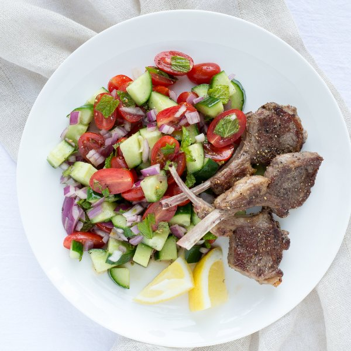

Lamb Chops with Minty Cucumber & Tomato Salad

Nutrition (per serving)
673.3 kcalCalories
43 gProtein
15.3 gCarbs
50.5 gFat
Full nutrition table
| Calories | 673.3 kcal |
| Total fat | 50.5 g |
| Saturated fat | 18 g |
| Trans fat | 2.2 g |
| Cholesterol | 130.4 mg |
| Sodium | 144.9 mg |
| Carbohydrates | 15.3 g |
| Fiber | 4.5 g |
| Sugars | 7.8 g |
| Protein | 43 g |
| Potassium | 998.7 mg |
| Calcium | 75.5 mg |
| Iron | 4.8 mg |
| Vitamin A | 1364.1 IU |
| Vitamin C | 31.2 mg |
| Vitamin D | 0 IU |
Cookware
Ingredients
- 2English cucumbers
- 1 small pkgfresh mint
- 2 pintsgrape tomatoes
- 12lamb rib chops
- 1lemon
- 1 mediumred onion
- black pepper
- extra virgin olive oil
- salt
Steps
- Place the lamb chops on a plate; rub with olive oil and season with salt and pepper on both sides; set aside.12 lamb rib chops
4 tsp extra virgin olive oil
½ tsp salt
½ tsp black pepper - Wash and dry the fresh produce.2 English cucumbers
2 pints grape tomatoes
1 small pkg fresh mint
1 lemon - Cut the cucumber in half crosswise, then cut quarter lengthwise into 4 wedges; cut the wedges crosswise into bite-sized chunks. Transfer to a large bowl.
- Halve the tomatoes and add to the bowl.
- Pick the mint leaves off the stems; discard the stems. Stack the leaves and cut crosswise into thin ribbons; add to the bowl.
- Preheat a grill pan or skillet over medium heat.
- While the pan/skillet heats up, peel and small dice the onion; add to the bowl.1 medium red onion
- Place the lamb chops on the grill or skillet and cook until desired doneness, 2 to 5 minutes per side.
- Halve the lemon and juice one half over the salad. Cut the other half into wedges for serving.
- Drizzle the salad with olive oil and season with salt and pepper. Toss to combine.4 tbsp extra virgin olive oil
½ tsp salt
½ tsp black pepper - To serve, place the salad on plate, add the lamb chops on the side, and squeeze the lemon wedges over the lamb. Enjoy!